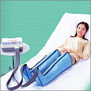
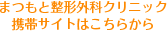

-
NemioXG-1
最新のデジタル技術を使い、クリアな画像で診断ができるフルデジタル超音波診断装置を設置しております。リアルタイムで患者さんと一緒に検査画像を確認できる検査です。体に無害な超音波を当てる為、妊娠中の方でも検査可能です。 カラードプラー検査もできるため、検査部位の血流状態も観察可能です。
実際の使用疾患としてスポーツ障害(膝の靭帯損傷、大腿部や下腿などの肉離れ、アキレス腱断裂、アキレス腱周囲炎など)、五十肩や肩の腱板断裂、軟部腫瘍、ガングリオン、手根管症候群などの検査が可能です。
主な検査部位／肩関節、肘関節、手関節、手指、膝関節、大腿部、下腿部、足関節、足部など。 骨密度測定装置
DXA法（デキサ法；二重エネルギーX線吸収測定法）は、２種類のエネルギーレベルのX線の透過率の差を利用して測定する精度が高い骨密度検査法です。
当クリニックでは、このDXA法により、腰椎正面、大腿骨頸部、全身の骨の骨密度を測定しています。
測定時間は、腰椎約１分、大腿骨頸部片側約１分、全身約６分と比較的短く、放射線の被ばく量（実効線量等量）は、一番被ばく量の多い全身測定でも胸部X線撮影時の約1／10とわずかです。-
アルファビーム／ALB200H／MINATO
ハロゲンランプが発生した光エネルギーを光りファイバーライトガイドを用いて、高エネルギー密度で伝達を行います。生体深達性のよい近赤外線のみを取り出し、ポイント照射する新世代赤外線治療器です。鍼療法と温灸療法の利点を兼ね備えており、幅広い治療場面で大きな効果を発揮します。

ドクターメドマー／DM-5000EX／NITTO
「血液とリンパ液の効果的な流れの促進」をテーマに、「使いやすさ」と「理想的な効果」の追求から誕生しました。ウェーブモード(揉み上げ)・スクイーズモード(絞り上げ)・ハイパーモード(同時加圧)の３種類のモードで、健康な身体づくりを行います。
ハートビーマ／HB200／MINATO
これまでの赤外線治療器では、治療可能になる温度の到達まで時間を要しました。こちらはエスパーヒーターが可能にした余熱不要の急速昇温とリズムモードで、煩わしい待ち時間を一気に解消した治療器です。特長としては遠赤外線の持つ共鳴吸収、深達作用により、穏やかに効率よく深部まで暖まり、治療を終了した後でもぬくもりが残存します。
ハイドロタイザー／HC-6M／MINATO
湿性温熱療法ミナトパックを加温し、適温に保つ新世代加温装置です。
マックスカイネ／MK-130G／MINATO
最新鋭ポイント刺激低周波治療器です。８種類の治療モードで、バリエーション豊かな治療をサポートします。また、高電圧治療モードも備えています。
ポラリスカイネ／PO-3／MINATO
11,000Hzの中周波領域の治療波により、0.1Hzの低周波を感じる、新型ワイドレンジ治療器です。低周波から高周波、様々な周波数を融合させた器械です。
アクアタイザー／QZ-220／MINATO
ウォーターマッサージベッドです。「水」本来の流体特性を”手技療法”に応用し、ウォーターベッドならではの浮遊感に抱かれながら手技治療のような力強い・心地よい刺激を実現しました。手技による治療は、整形外科や内科領域の医学分野でもなくてはならない治療法となっております。
スーパートラック／ST-2L／MINATO
牽引治療をスムーズに行う器械です。牽引療法は、腰椎牽引(骨盤牽引)と頸椎牽引があります。牽引部位の筋スパズム改善や、間欠牽引によるマッサージ効果、椎間開大の手助けをして圧迫神経への影響をやわらげる、などが考えられています。
トラックタイザー／TC-30DC／MINATO
安定した治療が可能な、頸椎専用牽引装置です。
自動血球数CRP測定装置／FL-270CRP／フクダ電子
赤血球・白血球・血小板測定などを行う器械です。
生化学自動分析装置／富士ドライケム4000i／富士フイルム
さまざまな疾患の検査がスピーディーに行える器械です。
〒811-0213 福岡市東区和白丘2-3-7
TEL 092-605-6006 / FAX 092-605-6007




まつもと整形外科クリニック
〒811-0213 福岡市東区和白丘２丁目３－７- 福岡市東区
- 和白
- 整形外科
- 一般整形外科
- スポーツ整形外科
- リウマチ科